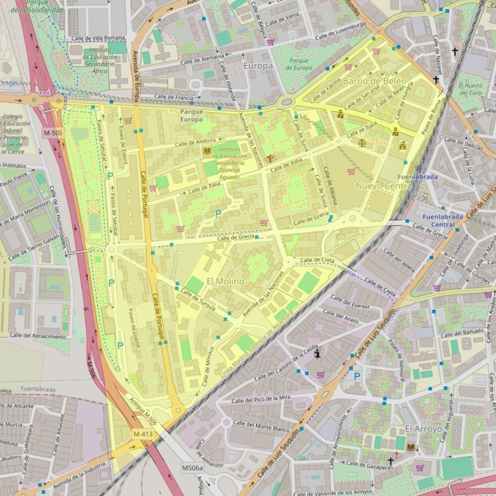

San José

- Arciprestazgo
- Fuenlabrada
- Población
- Fuenlabrada
- Dirección postal
- c/ Italia, 12
- Código postal
- 28943
- Extensión
- 0,83 km² (83 ha)
- Teléfono
- 918 602 293
- Correo electrónico
- sanjose-fuenlabrada@diocesisgetafe.es
Arciprestazgos y parroquias de la Diócesis de Getafe
